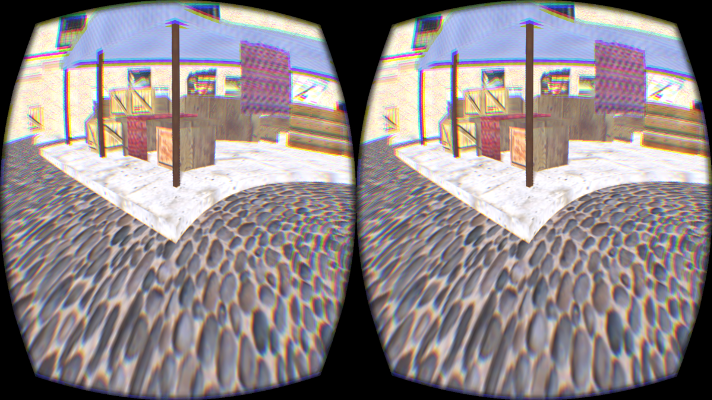

|
I am currently a third year Ph.D. candidate at Center of Visual Computing, Department of Computer Science at Stony Brook University. I am advised by Distinguished Professor Arie E. Kaufman while collaborating closely with Professor Li-Yi Wei. Before this, I obtained B.Sc. in Mathematics and Applied Mathematics from Shandong University, China (2009 - 2013).
My research interests lie in applying geometric and computer graphics tools to render the possibilities in virtual reality and scientific visualization. You can checkout my work here.
|  |
|
|